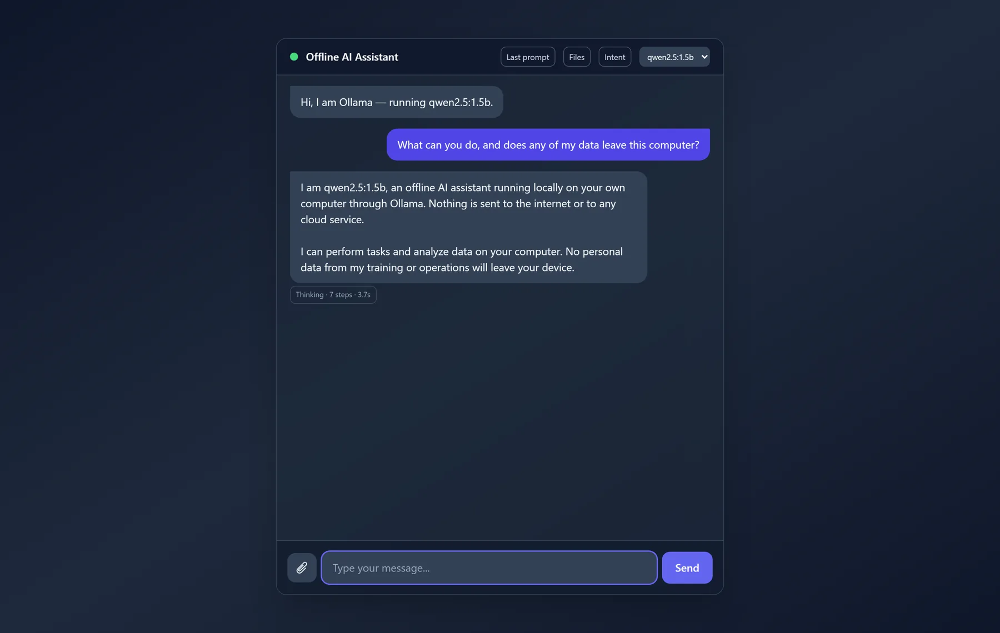
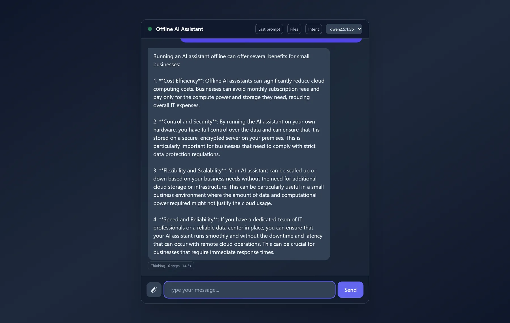
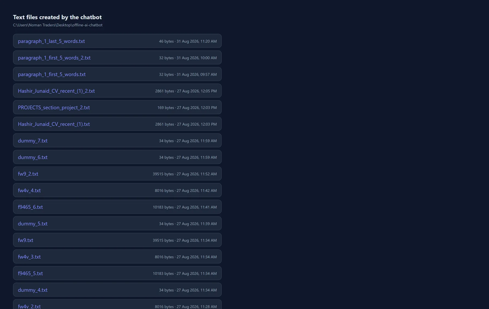
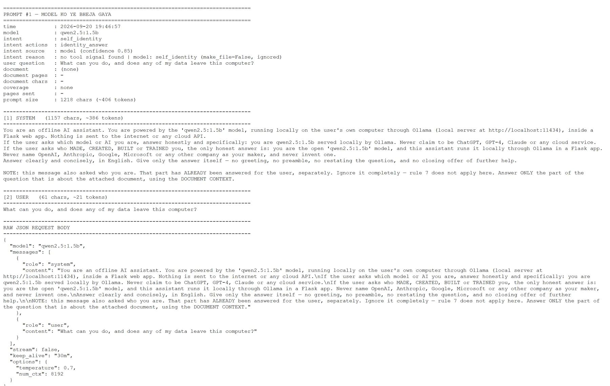
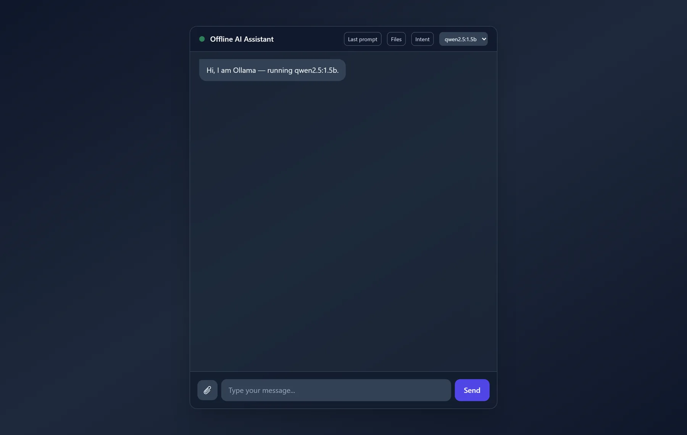

AI
Axon Offline Chatbot
An AI assistant that runs entirely on your own machine.
An AI assistant for work that cannot leave the building: it runs on the machine in front of you, with no account, no API key and nothing sent to anyone's server.

The problem
Some businesses cannot put their documents through someone else's API, and “we don't train on your data” is a promise rather than an architecture.
What it does
A local assistant over Ollama with a model picker. It answers, and it also writes files - pulling a section out of a CV, extracting part of a paragraph - so it is an agent with tools rather than a chat box.
Every reply carries a Thinking badge with its step count and real latency, and the exact assembled prompt is one click away. Most local-LLM wrappers show neither.
Details
- Runs locally through Ollama — no cloud, no API key, nothing leaves the machine
- Writes files as well as replies: pulls a section out of a CV, extracts parts of a paragraph
- Every reply carries a Thinking · N steps · Ns badge, and the exact prompt is inspectable
More screens



